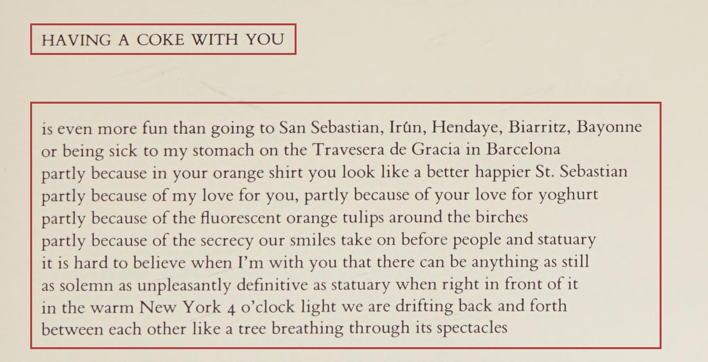
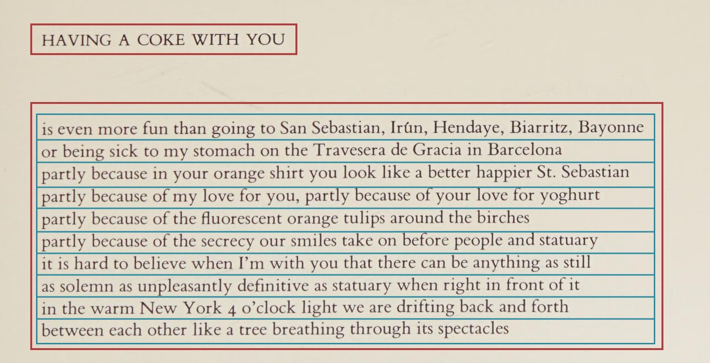
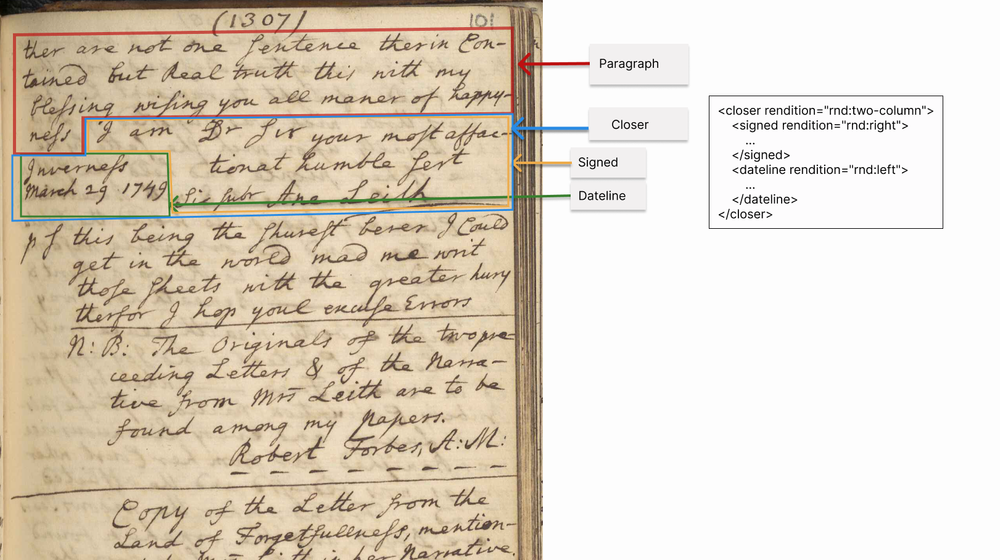

Unceded territory of the səl̓ilw̓ətaʔɬ (Tsleil-Waututh), kʷikʷəƛ̓əm (Kwikwetlem), Sḵwx̱wú7mesh Úxwumixw (Squamish), and xʷməθkʷəy̓əm (Musqueam) Nations
The TEI
The TEI
A set of guidelines for encoding text
A non-profit organization
A community or consortium of users
Website: https://tei-c.org/
The TEI
Is a markup language written in XML
Currently in its 5th major revision (P5 4.9.0)
Used by many projects across the world in many different languages and for many different reasons
Example Projects
Landscapes of Injustice Archive
The Yellow Nineties
The Winnifred Eaton Archive
Scholarly Editing
Encoding, markup, et cetera...
At its core, marking up text is a way of identifying and differentiating bits of text from other bits of texts.




We do this all the time!
Italics for emphasis
Underlining for titles
Bold for extra-emphasis
Quotation marks for outside attribution
or skepticism
All capitals to YELL
+++
Encoding, markup, et cetera
But these are contextual and local
E.g. different types of punctuation for levels of quotation
And they are subject to varying interpretations
What is markup?
Markup refers to a structured way to identify and separate textual information
The most common form of markup is a structure called XML (aka "pointy brackets")
Semantics v. Display
Semantic or Descriptive markup = encoding what the thing is
Display or Presentational markup = encoding how you want that thing to look
Encoding Texts as Literary Criticism
Marking up text is an assertion of your knowledge and your interpretation of the text
What does the text (form and content) express?
The Process of Marking Up Texts
The process is analytical, strategic, and interpretive.
It is analytical, in identifying a set of components into which the text can meaningfully be broken and whose relationship can be represented
Markup is strategic, in that text encoding is always aimed (deliberately or by default) at some intellectual or practical goal
And markup is interpretive, in that the act of encoding will always take place through a connection between an observing individual and a source object.
Why should we encode texts?
Accessibility
Distribution
Flexibility
Interoperability
Convertibility (i.e. from one format to another)
Analysis (Distant Reading, et cetera)
Answering existing (and asking new) research questions
XML
XML = eXtensible Markup Language
XML is not a set language unto itself, but a grammar
There is nothing inherent about the function of XML
It is purely a structure--a way of organizing
Anyone can conceive of an XML dialect (e.g. it is extensible)
XML
Markup codifies intentions
"Sure"
<quotation>Sure</quotation>
<sarcasm>Sure</sarcasm>
<skepticism>Sure</skepticism>
<title>Sure</title>
XML is Everywhere
HTML (HyperText Markup Language: Every website)
KML (Keyhole Markup Language: Google Maps)
RDF (Resource Description Framework: Library catalogues)
SVG (Scalable Vector Graphics: Digital Images)
OOXML (Open Office XML: This presentation, word documents, et cetera)
XML
XML is hierarchical
XML is a tree-like structure
And is often described in genealogical terms
XML
- chocolate
- butter
-
- sugar
- large eggs
The two pointy brackets is called an element
E.g. <item> = the item element
All elements have start and end tags
<ingredients> is the start tag and </ingredients> is the end tag
Elements can also have attributes (@quantity)
Attributes must have a value: <item quantity="2">.
All XML structures have a "root" (or container) element
Elements nest and use genealogical terms
The ingredients element is a parent of item
<option>s are children of <choice>
XML Explained
Elements cannot overlap
✅ <shelf><book>Anna Karenina</book></shelf>
❌ <shelf><book>Anna Karenina</shelf></book>
The TEI = XML Vocabulary
The TEI defines elements and attributes to create a standard for encoding texts
All texts must be called <text>
All divisions (whether they be chapters, sections, et cetera) must be called <div>
All paragraphs must be called <p>
All words must be called <w>
+++
The TEI
Offers a rich vocabulary and method to encode:
Bibliographic and structural features: page breaks, headers, footers, page numbers, line breaks, divisions, paragraphs, line groups, etc
Interpretative features: stage movement, emphasis, place names, proper names, dialogue direction, etc
Editorial apparatus: hands, witnesses, collation, gaps, additions, deletions, etc
Linguistic features: morphemes, feature structures, orthographic form, etc
Spoken features: incidents, pauses, shifts, "communicative phenomenon", etc
Metadata: various classification schemes, provenance, manuscript description, etc
+++++
Components of a (basic) TEI file
Root <TEI> element
A <teiHeader> that describes both the file and the primary source that you are transcribing (if applicable)
A <text> that contains the text of the document
Within text, you can have a <front>, <body>, or <back>
<TEI xmlns="http://www.tei-c.org/ns/1.0">
<!--...-->
</TEI>
<TEI xmlns="http://www.tei-c.org/ns/1.0">
<teiHeader>
<fileDesc>
<titleStmt>
<title>Title</title>
</titleStmt>
<publicationStmt>
<p>Publication Information</p>
</publicationStmt>
<sourceDesc>
<p>Information about the source</p>
</sourceDesc>
</fileDesc>
</teiHeader>
<!--...-->
</TEI>
<TEI xmlns="http://www.tei-c.org/ns/1.0">
<teiHeader>
<fileDesc>
<titleStmt>
<title>Title</title>
</titleStmt>
<publicationStmt>
<p>Publication Information</p>
</publicationStmt>
<sourceDesc>
<p>Information about the source</p>
</sourceDesc>
</fileDesc>
</teiHeader>
<text>
<body>
<p>Some text here.</p>
</body>
</text>
</TEI>





TEI
Note that the TEI is huge (586 elements)
No one uses the entirety of the TEI tagset
Individual projects customize the TEI for their own needs, usually using a small subset of the overall tagset
E.g. Drama projects will use the drama tagset (<sp> for speech, <speaker> for speaker, et cetera) and discard the linguistic/dictionary tagset (<entry> for dictionary entries, <m> for morpheme, etc).
The Guidelines: Some Examples
What to encode?
Input =/= Output
Encode what you care about and what you have time to encode
If you don't encode it, you can't do much with it
But: you don't need to encode or retain everything
Roma: Create your own TEI subset
Okay, I'm convinced...where do I start?
TEI Editors
Since TEI is XML, you don't need special software to start encoding...
But there are some tools that can make it easier
oXygen XML Editor
VSCode + Scholarly XML Extension
https://marketplace.visualstudio.com/items?itemName=raffazizzi.sxml
WYSIWYG
Or, WYSIWYE (What you see is what you encode)
LEAF-Writer
My stuff is encoded...what can I do with it?
TEI Garage
CETEIcean 🐳
I want to learn more!
DHSI: Text Encoding Fundamentals and their Application (June 3–7, 2024)
Learning more about the TEI
The TEI Guidelines: https://www.tei-c.org/release/doc/tei-p5-doc/en/html/index.html
TEI By Example: https://teibyexample.org/
TEI GitHub: https://github.com/TEIC/TEI
TEI listServ: https://listserv.brown.edu/cgi-bin/wa?A0=TEI-L
Thanks for listening!
Any questions?
Thanks for listening!
Any questions?
takeda@sfu.ca
- Digital Research Alliance of Canada
(Meghan Landry, Megan Meredith-Lobay,
and Pier-Luc St-Onge)
- Simon Fraser University Library
- TEI Technical Council and the Women Writer's Project